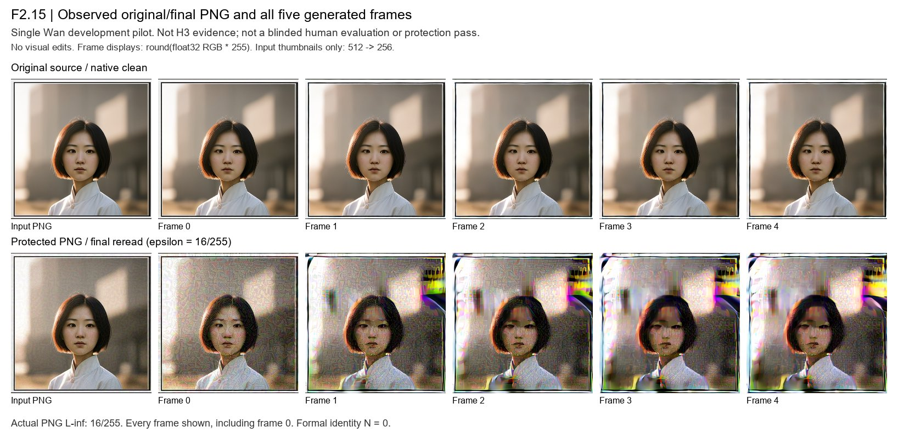

目标：在合法扰动预算 L∞ ≤ 16/255（人眼不可见的像素级扰动）下，对受保护照片施加扰动，使视频生成模型输出的画面无法被识别为源人物。
方法：可微白盒身份攻击（identity VJP）——将 ArcFace 身份损失直接反向传播穿过整条采样链（DiT → VAE 解码器 → VAE 编码器 → 原始像素），而非优化中间编码距离。这是从「代理目标」转向「真实输出读出」的关键一步。
具体采用两遍流式求导：先无梯度前向收集信号，再恢复随机状态重放、逐位核验一致后执行梯度回传，最后以整数符号步长更新并投影回原图 ±16 区间。候选族为 ±1 / ±4 / ±8 / ±16（over 255）双极性整数扰动，最终选定 r16-minus 候选。
本次实验首次在预算内实现全帧（含首帧）身份相似度崩塌，ε=16/255 也首次真正打满（此前 H3 系列仅能施加 7–8/255）。
| 身份指标 | 原图（clean） | 受保护（protected） | 变化 |
|---|---|---|---|
| ArcFace R50 最大余弦 | 0.893 | 0.224 | −0.67 |
| ArcFace R100 最大余弦 | 0.860 | 0.278 | −0.58 |
逐帧 R50 余弦（含第 0 帧）：
| 帧 | F0 | F1 | F2 | F3 | F4 |
|---|---|---|---|---|---|
| 原图 | 0.893 | 0.882 | 0.846 | 0.815 | 0.804 |
| 受保护 | 0.206 | 0.224 | 0.115 | 0.121 | 0.101 |

本次结果验证了「身份损失直攻输出读出」这一方向的机制有效性：在合法 16/255 预算内首次将 ArcFace 身份相似度从 0.89 降至 0.22（全帧含首帧），并伴随明显的画面破坏。
但需诚实说明以下边界，尚不构成正式「攻击成功」结论：
false。数据均来自独立审计逐帧复测（R50/R100 bit-exact），未做美化或夸大。